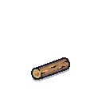
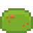
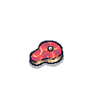

1일차
08:00

목재
0
금
0
철
0

식량
0
🟤
가죽
0
🥩
고기
0
✨
진미
0

요리
0
📦
저장고
0/0
👥
인구
3
⏸
▶
▶▶
▶▶▶
🔊
💾
📂
🆕
✕
🛠️ 도구
🏗️ 건설
🎨 꾸미기
⚙️ 관리
🖱️ 선택
🪓 벌목
⛏️ 채굴
🧺 채집
🥩 사냥
🐴 길들이기
🎣 낚시
🪝 좌대
🌾 농사
🍎 과일나무
🕳️ 삽
✖️ 취소
🚫 작업취소
🏠 집
🛠️ 대장간
🏚️ 창고
🗼 망루
🛡️ 초소
🧱 울타리
🏰 성
🔥 모닥불
🐑 목장
🐴 축사
🏥 치료소
⛏️ 광부 오두막
🌾 농부 오두막
🚣 뗏목
⚓ 선착장
🔨 철거
🚀 탈출선-선체
🔥 탈출선-엔진
⚡ 탈출선-반응로
🛢️ 통
🧺 바구니
🪑 벤치
🍽️ 탁자
🏮 가로등
🪧 표지판
🌷 화단
🚩 깃발
🔨 철거
🏛️ 발전
🎁 유물
🗑️ 버리기
🛒 상인
🗡️ 자동무장: 꺼짐
📚 연구
⚒️ 제작
🏆 목표
📈 업그레이드
🧑🌾 고용
이름
대기 중
🍖 포만감
❤️ 체력
😊 기분
🎯 역할
⚔️ 자동공격: 꺼짐
✏️ 이름·외형 변경
건물
정착민 클릭·드래그: 선택 (WASD 이동 · Space 작업) · 우클릭(짧게)/ESC: 취소 · 우클릭 드래그·화살표: 화면 이동 · 휠: 줌 · P: 일시정지
▶
 금 0
철 0
금 0
철 0
금 0
철 0
금 0
철 0